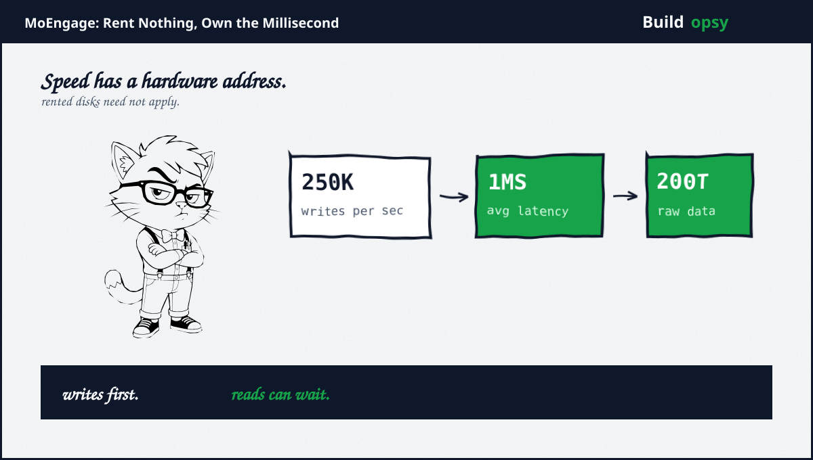
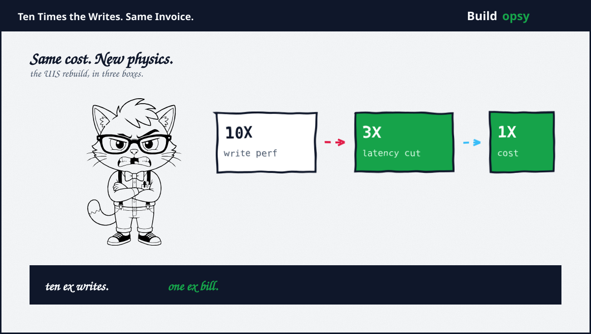

1. The Smell of Rented Disks
Every data engineer develops a nose for mismatched hardware. Mine tingles whenever somebody serves a write firehose from disks designed for photo albums. MoEngage story starts exactly there. Their Eventstore ingests hundreds of billions of events a month for hyper-personalization: the last product viewed inside an email, the last article inside a recommendation, the last cart addition inside web content. The gap between a user action plus the platform reaction is the whole product. Batch was never going to survive contact with that promise.
The requirements read like a dare. At least 250,000 events a second. One millisecond average. Under ten at p99. Horizontal scaling with no degradation. Over 200 terabytes of raw data underneath. I have seen smaller numbers kill larger budgets, because the numbers were never the hard part. The hard part was admitting that every comfortable disk choice failed them, one by one, in public.
2. Three Disks Walk Into a Workload
Memory-optimized instances with network storage went first. For a write firehose they were simply the wrong animal. The team said so plainly. High-performance io2 volumes came next with pricing the team called prohibitive at their scale. Prohibitive is finance language for correct architecture at impossible cost. The affordable GP3 volumes failed differently: no p99 guarantee plus throttling risk during bursts, which for a millisecond product means failing exactly when success arrives.
Then the guidance that sealed it. Even AWS documentation positions network block storage better for read-heavy profiles, the precise opposite of this workload. Trusting rented disks here meant paying premium rates for someone else throttling policy. Local NVMe won on the only metric that mattered: sustained sub-millisecond writes under a relentless stream, owned outright instead of metered nervously. The delay between action plus reaction, in their words, is the difference between a conversion plus a missed opportunity. They bought the difference in hardware.
The delay between a user action and our ability to react to it is the difference between a conversion and a missed opportunity.MoEngage talk, via ScyllaDB
Price the serving shape through the RPS envelope calculator. A quarter million events a second across a month is roughly 650 billion events. At any per-million price, the envelope dwarfs the hardware line it rides on, which is why the disk decision outranks every tuning decision beneath it. Pick the wrong storage tax bracket first plus no index tuning ever recovers the difference.

3. The Rebuild at the Same Invoice
Years earlier the same company had already rehearsed this lesson on its services layer. Users-in-segment, the base of their personalization stack, hit scale walls plus got rebuilt for ten times the write performance at three times lower latency for the exact same cost. Read that triple again slowly, because teams routinely trade two of the three. Ten times the throughput. A third of the latency. The same invoice. Whoever led that review understood something most reviews miss: cost, speed, plus scale form a triangle only when the architecture stays fixed. Change the architecture plus the triangle redraws itself.
I keep this story pinned beside the ShareChat saga from my last file. Different companies, different continents, identical moral. ShareChat cut rows read. MoEngage cut milliseconds rented. Both treated the bill as a design input rather than a weather event. The industry keeps two kinds of data teams: those who price their workload before choosing hardware, plus those who choose hardware before pricing anything. Guess which team sleeps through traffic spikes.
4. What to Steal
First, match the disk to the dominant direction. Write firehoses want local NVMe. Read lakes want networked capacity. The catalogue page will not tell you which workload you run. Your p99 graph will, usually at 3 AM.
Second, price managed options at steady state, not at prototype. Rented performance looks gentle in week one plus becomes the largest line by month six. Reprice yearly with operations burden on the same page.
Third, demand p99 guarantees in writing before trusting shared infrastructure. Averages soothe dashboards. Tails page humans. If the vendor will not promise the tail, assume the tail belongs to you.
Fourth, rebuild services at fixed cost as a discipline, not as heroics. Ten times the writes at the same invoice started as a scale problem plus ended as a design review. Schedule that review before the wall schedules it for you.
5. The Verdict
I admire restrained engineering. This is among the most restrained stories I have filed. No exotic database, no heroic rewrite, no mythology. A team measured its workload honestly, priced three disk options honestly, plus chose the boring fast one. Then, years earlier, they had already proven the same discipline on services. Twice is a culture. Once is luck.
The sentence I want every data review to open with: describe the dominant direction of your bytes, then show me the hardware receipt. If those two answers disagree, the postmortem has already started. It just needs a date.
250,000 writes. One millisecond. Zero rented excuses.
Sources and Method
This postmortem follows MoEngage engineering talks plus ScyllaDB case coverage. Throughput, latency, plus hardware decisions come from the published accounts. Cost framing is modeled from public cloud list prices.